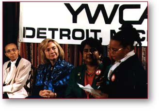
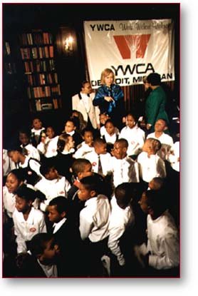

Michigan Highlights —
Week of October 7
  In Flint, the First Lady appeared at a school and had a town-meeting style discussion about the DARE (Drug Abuse Resistance Education) program and its benefits for children. Several students that had been positively influenced spoke, along with an officer in charge of the program. Mrs. Clinton also solicited questions from the many sixth grade children sitting on the floor in front of her. She discussed with them the problems of drug abuse and the many ways that they had learned to resist drugs.
Paid for by Clinton/Gore ’96 General Committee, Inc.